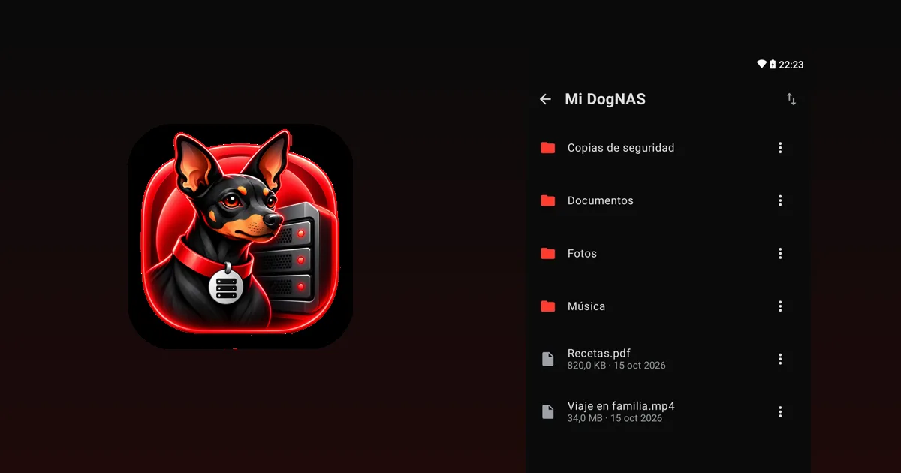

Vender, donar o reutilizar el celular viejo: cómo decidir

El celular viejo está en un cajón y todavía no decidiste qué hacer: venderlo, donarlo, reciclarlo o reutilizarlo en casa. Cada camino tiene sentido en una situación distinta. Esta guía te ayuda a elegir y muestra cómo proteger tus datos en cualquiera de ellos.
Las cuatro opciones
- Vender. Tiene sentido si el dispositivo aún tiene demanda y está en buen estado. Considera el tiempo y el trabajo de publicar y negociar, porque el valor suele ser bajo en modelos antiguos.
- Donar. Una buena salida si funciona bien y alguien lo aprovechará, como un familiar, una escuela o una institución.
- Reciclar. Si está roto o ya no sirve, llévalo a un punto de recolección de electrónicos. No lo tires a la basura común, por la batería y los materiales.
- Reutilizar en casa. Tiene sentido si enciende, se conecta al Wi-Fi y tienes una necesidad real. Un uso que sigue siendo útil es convertirlo en el servidor de archivos de la casa.
Cómo decidir
Pregúntate:
- ¿Funciona bien? Si la batería, la pantalla o el Wi-Fi están mal, reciclar o reparar puede ser mejor.
- ¿Necesito algo que él pueda hacer? Si quieres guardar fotos y documentos en casa sin pagar nube, puede ser el servidor. Mira qué hacer con un celular viejo.
- ¿Vale el dinero y el trabajo de venderlo? Si el valor es bajo, donar o reutilizar suele compensar más.
Antes de deshacerte de él: protege tus datos
Si el celular va a otra persona, sigue estos pasos:
- Haz una copia de seguridad de lo importante en otro lugar y comprueba que está ahí.
- Cierra sesión en tus cuentas, como la de Google, y quita el dispositivo de tu cuenta.
- Retira la SIM y la tarjeta de memoria.
- Restaura a los valores de fábrica, en los ajustes de Android.
Entrega el dispositivo solo después de eso.
Si eliges reutilizarlo como servidor de archivos
Con DogNAS, un Android 7.0 o más reciente se convierte en un servidor de archivos en el Wi-Fi de tu casa. Instala la app, elige dónde guardar (memoria, tarjeta SD o disco/pendrive USB), toca Iniciar y conecta los demás dispositivos con código QR y PIN. El plan Gratis administra hasta 64 GB, y Pro, una compra única y sin suscripción, usa todo el almacenamiento.
Antes, quita tus datos personales del dispositivo si solo va a ser servidor, y mantén una copia independiente de lo importante, porque DogNAS no hace copias por sí solo. Un dispositivo muy antiguo puede no recibir más actualizaciones de seguridad: úsalo solo en la red de tu casa, que es como funciona DogNAS.


Resumen
Si el celular no funciona bien, recíclalo. Si funciona y no lo necesitas, dónalo o véndelo, después de borrar tus datos. Si funciona y necesitas un lugar para guardar los archivos de la casa, conviértelo en servidor de archivos.